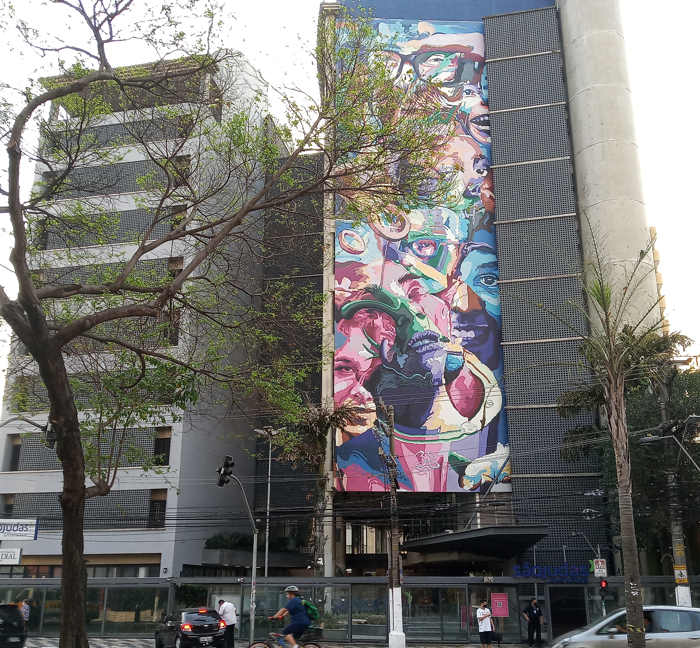

Quem Somos?

O 7SportsMen é um projeto
desenvolvido por nós, um grupo de estudantes de Engenharia de Software
comprometidos em criar um espaço onde você possa aprender
e se informar sobre estratégias seguras e eficazes para o ganho de massa muscular.
Objetivo
Nosso objetivo é fornecer informações acessíveis, precisas e de qualidade sobre exercícios.
ajudando você a alcançar suas metas de forma segura e sustentável.
Inspirados pelos objetivos de Desenvolvimento sustentável (Ods),
buscamos melhorar a qualidade de vida e incentivar a prática de atividades fisíca.
Esperamos que as informações apresentadas aqui sirvam como uma base solída para
o desenvolvimento de uma jornada eficaz de ganho de massa muscular.
Compromisso
Nosso comprimisso é oferecer conteúdos que ajude nas metas de cada pessoa,promovendo
uma abordagem equilibrada e saudável.
aproveite ao máximo nosso site e lembre-se: com disciplina ,consistência e práticas corretas
você poderá alcançar seus objetivos!
Tudo começou em 2024 na Universidade São Judas Campus-Jabaquara
Onde nossa equipe se uniu com o propósito de disseminar conhecimento sobre saúde e bem-estar.

Siga nossas redes socias: